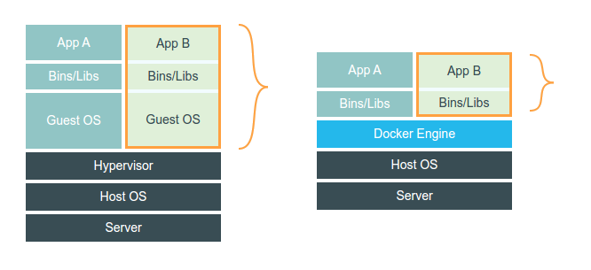

Carles Amigó (fr3nd)

docker pull redis
docker run -P redis
FROM debian:jessie
RUN apt-get update && apt-get install -y apache2
EXPOSE 80
CMD apache2 -DFOREGROUND
docker pull fr3nd/basepuppet
FROM debian:jessie
MAINTAINER Carles Amigó, fr3nd@fr3nd.net
RUN apt-get update && apt-get install -y \
git \
ruby \
&& rm -rf /usr/share/doc/* \
&& rm -rf /usr/share/info/* \
&& rm -rf /tmp/* \
&& rm -rf /var/tmp/*
ENV PUPPET_VERSION 3.7.1
ENV FACTER_VERSION 2.4.1
ENV R10K_VERSION 1.5.1
ENV R10K_MODULE_VERSION 2.7.3
RUN echo "gem: --bindir /usr/bin --no-ri --no-rdoc" > ~/.gemrc
RUN gem install facter -v $FACTER_VERSION
RUN gem install puppet -v $PUPPET_VERSION
RUN mkdir -p /etc/puppet/manifests /etc/puppet/modules
ADD puppet.conf /etc/puppet/puppet.conf
RUN gem install r10k -v $R10K_VERSION
FROM fr3nd/basepuppet
MAINTAINER Carles Amigó, fr3nd@fr3nd.net
ADD Puppetfile /etc/puppet/Puppetfile
WORKDIR /etc/puppet
RUN r10k puppetfile install
RUN puppet apply -e "include apache"
EXPOSE 80
CMD apache2 -DFOREGROUND
mod 'puppetlabs/apache', '1.4.1'
mod 'puppetlabs/stdlib', '4.6.0'
mod 'puppetlabs/concat', '1.2.1'
include docker
class { 'docker':
version => 'latest',
tcp_bind => 'tcp://127.0.0.1:4243',
socket_bind => 'unix:///var/run/docker.sock',
dns => '8.8.8.8',
docker_users => [ 'user1', 'user2' ],
}
docker::run { 'helloworld':
image => 'busybox',
command => '/bin/sh -c "while true; \
do echo hello world; sleep 1; done"',
}
docker::run { 'redis':
image => 'redis:3',
command => 'redis-server --appendonly yes'
ports => ['6379'],
volumes => ['/docker/host/dir:/data:rw'],
memory_limit => '4g',
cpuset => ['0'],
restart_service => true,
privileged => false,
pull_on_start => true,
}
web:
image: apache
links:
- db
ports:
- "80:80"
db:
image: mysql
github.com/fr3nd/puppet-docker_compose
Proof of concept!
include docker_compose
docker_compose::application { 'foo_app':
ensure => 'present',
content => file('files/foo_app.yaml'),
}